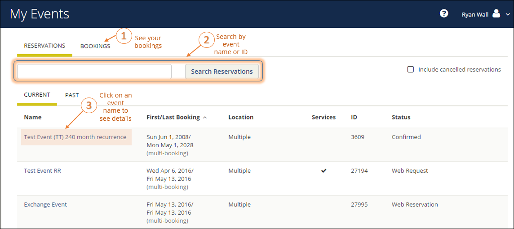

Important: The VIEW EVENTS option is different than the BROWSE EVENTS option in the main menu. To learn more, see MY EVENTS vs. BROWSE EVENTS.
You can quickly view your events, reservations, and requests on both your MY HOME page as well as your MY EVENTS page.

Tip: EMS only returns search results that contain the exact order of the characters in your search string, but EMS does not care about if your search string is uppercase or lowercase. In addition, EMS will return search results that contain your search string regardless of where those characters appear. For example, a search string of ed returns the College of Education Seminar, Ed Smith fundraiser, Health Center Education Training, and so on.
Note: The BROWSE > EVENTS menu option shows all of your reservations as well as all reservations that you are authorized to view. The MY EVENTS menu option shows only your reservations and bookings. Before making your own reservations, especially if you are a newer EMS Web App user, we recommend that you BROWSE > EVENTS first to build familiarity with your organization's booking practices, schedule, facilities, and users. To learn more, see Create a Reservation in the EMS Web App.